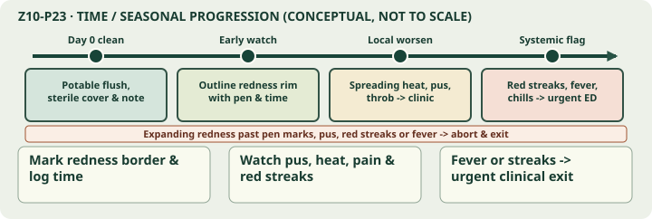

Z10-P23 · Wilderness medicine · New manuscript
Recognize worsening wound infection and sepsis warning signs
Catch localized skin infection early and trigger urgent evacuation before systemic bloodstream infection develops.
When it applies · Any cut, blister, burn, splinter, or bite monitored over hours to days in remote settings.
Equipment · Clean pen to trace redness borders, watch/log, clean dry dressings, and emergency comms.

Actions
- Inspect every healing field wound at least once daily for spreading redness, increasing warmth, worsening throbbing pain, swelling, foul odor, or yellow/green pus drainage.[M06, M20]
- Outline the outer edge of any skin redness lightly with a pen and note the time so you can see objectively whether redness is expanding outward over subsequent hours.[M06, M20, ED]
- Treat red streaks traveling up a limb, fever, chills, shaking, rapid breathing, or new confusion as urgent systemic infection emergencies requiring immediate evacuation and clinical antibiotics.[M06, T02, M05]
Failure recognition · Waiting three days on a multi-day trip while redness climbs past the ankle and fever begins, assuming basic ointment will cure a deep infection.[M06]
Verify · Confirm wound appearance, pen-border progress, and presence or absence of fever/chills are logged daily.[M06, M20]
Stop or change course · Expanding redness past marked lines, pus, joint stiffness, red streaks, fever, or confusion mandate immediate exit to medical care.[M06, T02]
Evidence and editorial notes
- M05 · NIH / MedlinePlus · Shock (current web edition)
- Section: Recognizing Circulatory Shock and Positioning · Conditions: Injured or ill patient with pale cool clammy skin, rapid weak pulse, confusion, or dizziness
Support: Treat suspected shock as a life-threatening emergency: call 911, control external bleeding, keep the person warm and insulated from cold ground, and do not give food or drink.
Limitations: Field responders cannot diagnose internal hemorrhage or administer IV fluids. · Conflicting evidence: None; reinforces keeping suspected shock patients NPO and warm.
Editorial note: Core shock recognition and stabilization boundary in Z10. · Specialist reviewer: Emergency and wilderness medicine
Primary source · checked 2026-11-24 - M06 · NIH / MedlinePlus · Wounds and Injuries (current web edition)
- Section: Minor Wound Cleaning, Protection, and Infection Red Flags · Conditions: Superficial cuts, scrapes, and abrasions with potable water available
Support: Rinse minor wounds thoroughly with clean potable water, cover with a clean sterile dressing, and monitor for worsening redness, warmth, swelling, pus, red streaks, or fever.
Limitations: Deep punctures, animal bites, retained foreign bodies, or heavily contaminated wounds require clinical evaluation and tetanus review. · Conflicting evidence: None; separates clean potable rinsing from harsh chemical wound scrubbing.
Editorial note: Anchors field wound hygiene and infection escalation cards. · Specialist reviewer: Wilderness medicine and wound care
Primary source · checked 2026-11-24 - M20 · NIH / MedlinePlus · First Aid Overview (current web edition)
- Section: Lay First-Aid Scope, Kit Readiness, and Documentation · Conditions: Pre-trip kit preparation and remote patient monitoring
Support: Maintain an inspected, unexpired first-aid kit matched to your actual training, keep written patient observations (time, responsiveness, breathing, symptoms, interventions) for EMS handoff, and practice skills in certified courses.
Limitations: Carrying advanced medical instruments without clinical training adds risk rather than capability. · Conflicting evidence: None; aligns with ARC and NPS-K.
Editorial note: Anchors kit sizing, SOAP-style lay observation logs, and scope-of-practice cards. · Specialist reviewer: Wilderness EMS and clinical education
Primary source · checked 2026-11-24 - T02 · American Red Cross · First Aid Steps (current web edition)
- Section: First Aid Steps > Call 9-1-1 · Conditions: Lay emergency response to unresponsiveness, abnormal breathing or severe bleeding
Support: Activate EMS and get needed equipment. Follow dispatcher directions and act within training.
Limitations: Remote locations may delay EMS arrival, requiring sustained stabilization after activation. · Conflicting evidence: None; aligns with NPS-E.
Editorial note: Mandates early emergency activation and dispatcher adherence. · Specialist reviewer: EMS and wilderness medicine
Primary source · checked 2026-11-24
Source lineage · NIH MedlinePlus Wounds; new manuscript · Classification · New manuscript.